Every slide below was built on one machine with no image model and no API key. Backgrounds are painted in code or use freely-licensed photographs; every headline, chart and number is rendered by a template in a real browser. A six-slide set takes about 17 seconds and costs nothing.
Backgrounds painted procedurally — a seeded canvas painter draws the field, the light and the flora. Every surface is glass. Topic: the collapse in the price of solar, from Our World in Data.
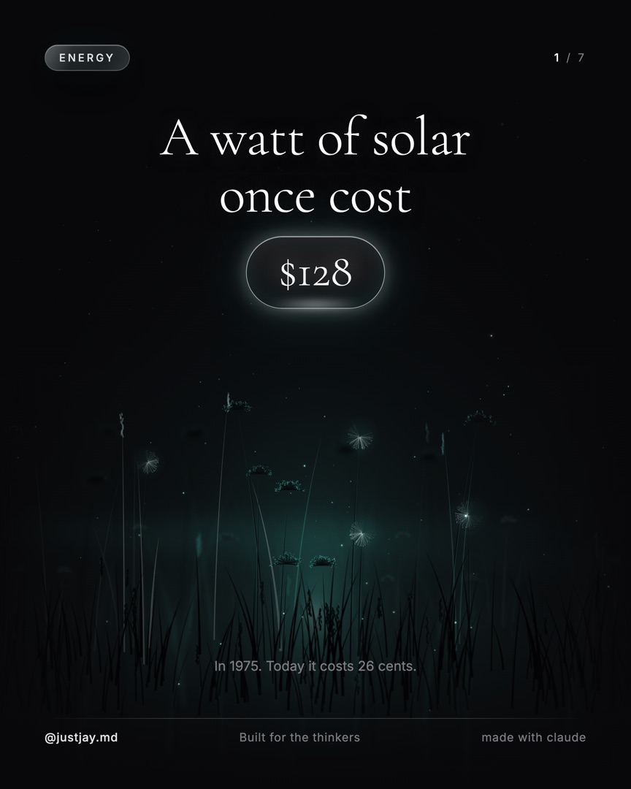
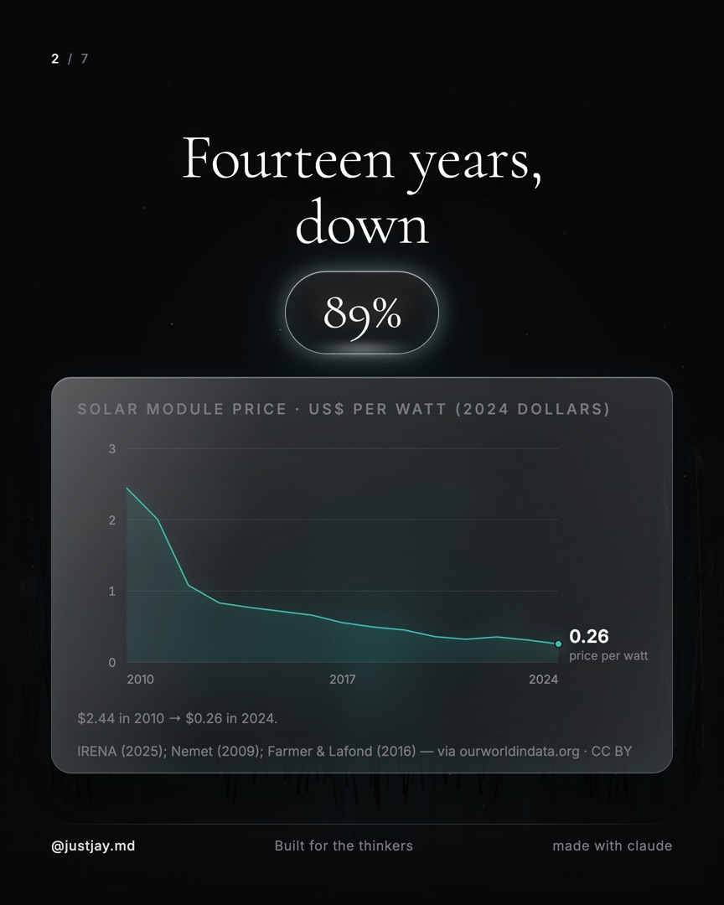
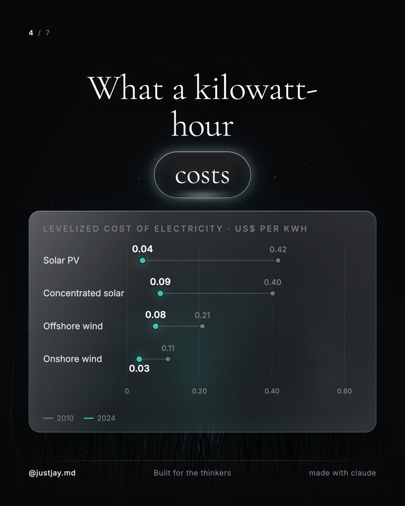
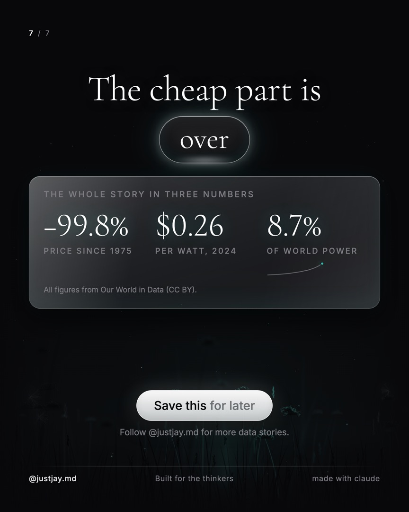
One hard seam per slide, the headline oversized and clipped as it crosses it, paper grain across the frame. A different licensed photograph on every slide. Topic: Ferrari's half-year results — fewer cars shipped, more money made.
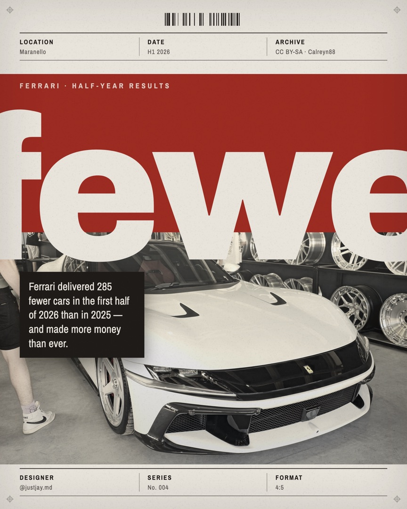
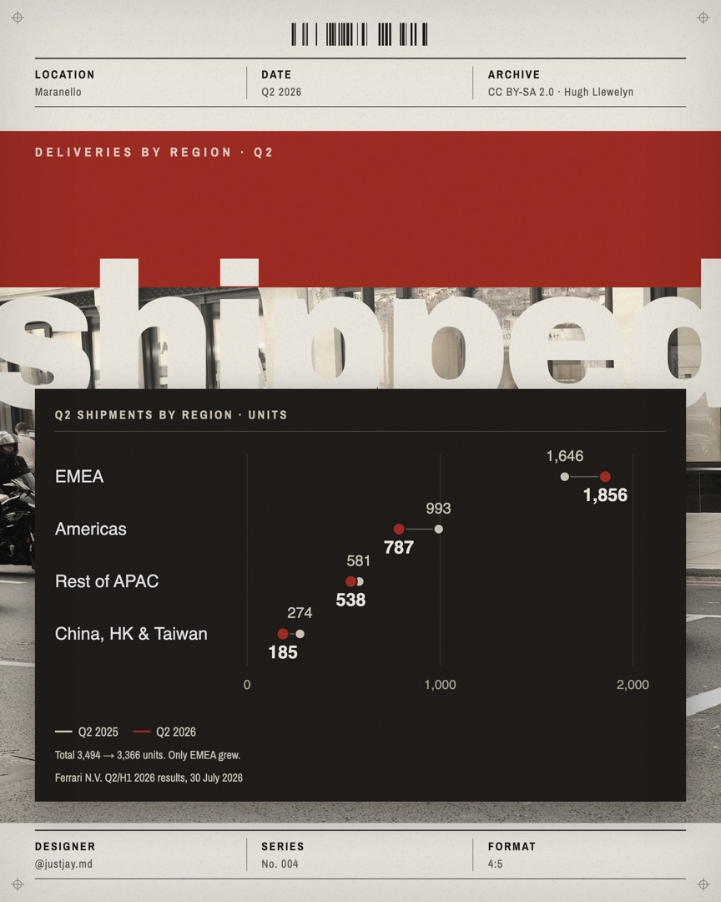
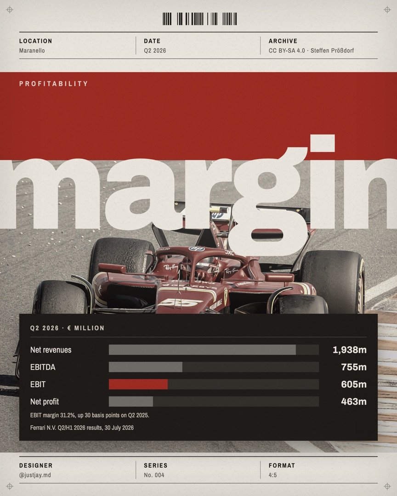
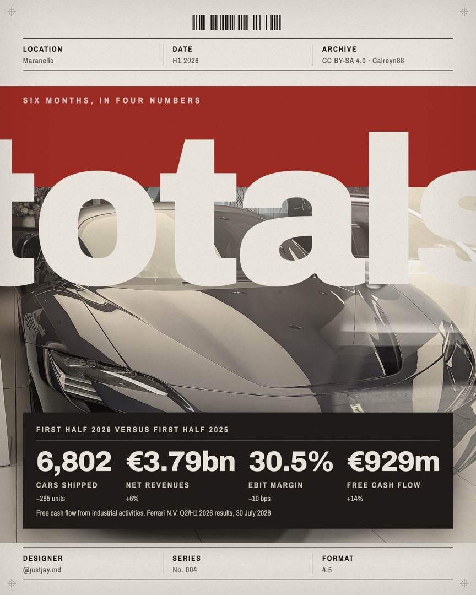
Ionic columns framing every slide, the headline set twice, doves and butterflies crossing three depth layers, a technical grid on top. Topic: the box office of Christopher Nolan's The Odyssey.
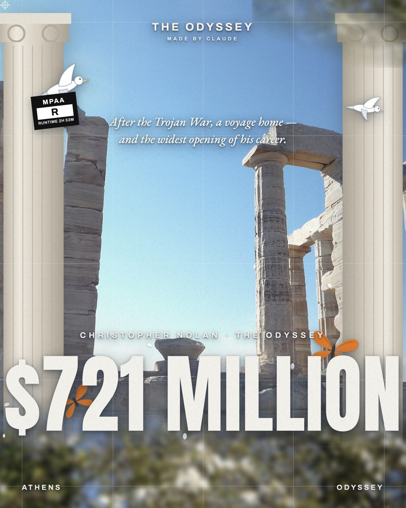
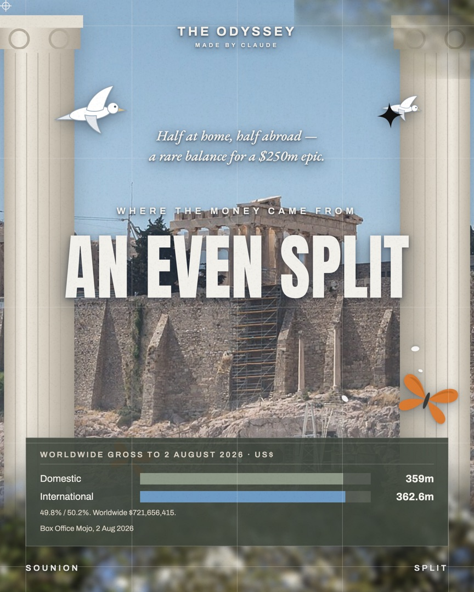
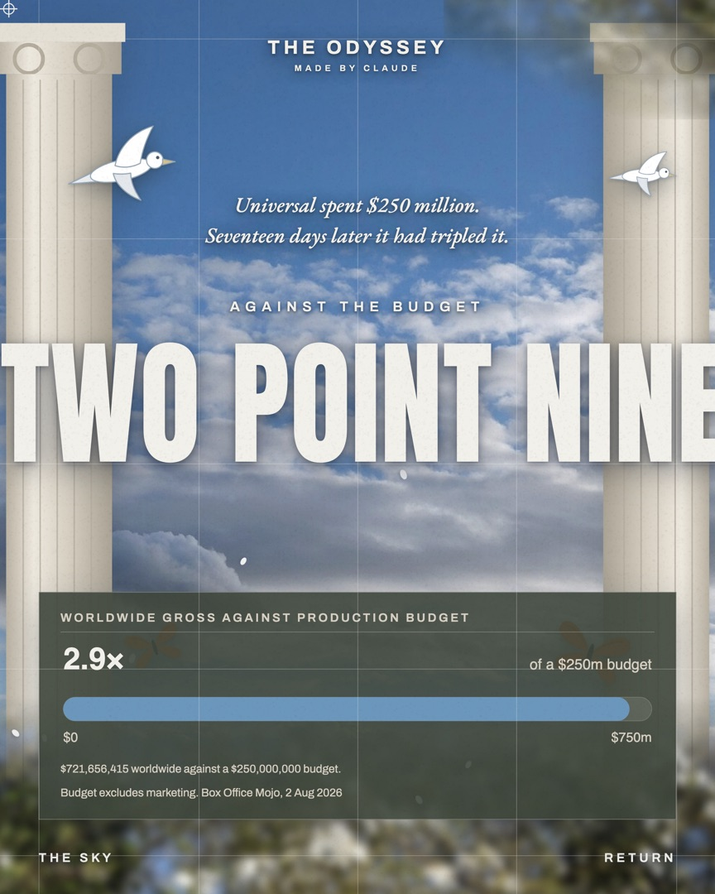
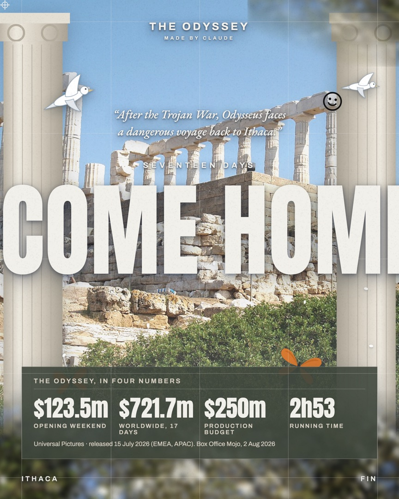